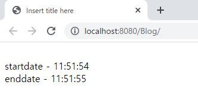
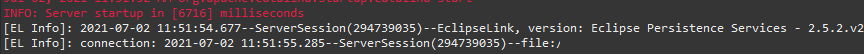
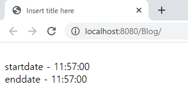
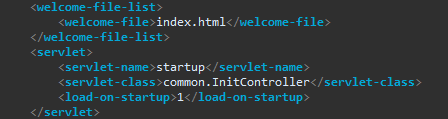
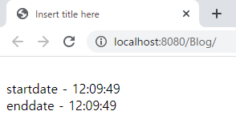
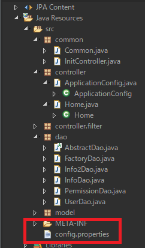
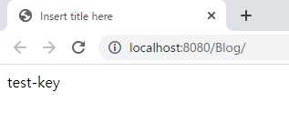

[Java] 56. Web serviceのサーブレット(Servlet)で初期化作業(properties設定)
こんにちは。明月です。
この投稿はWeb serviceのサーブレット(Servlet)で初期化作業(properties設定)に関する説明です。
Web serviceプログラムを作成すると、サーバを起動する時に初期化作業が必要な場合があります。
例えば、先にマスタテーブルのデータをインスタンス生成してメモリに割り当てするか、サーバの実行ディレクトリ設定などがあります。
また、先に我々がWeb serviceでORMをJPAで使う場合、最初にConnection初期化が必要です。
package controller;
import javax.servlet.http.HttpServletRequest;
import javax.servlet.http.HttpServletResponse;
import javax.servlet.http.HttpSession;
import org.springframework.beans.factory.annotation.Autowired;
import org.springframework.beans.factory.annotation.Qualifier;
import org.springframework.stereotype.Controller;
import org.springframework.ui.ModelMap;
import org.springframework.web.bind.annotation.RequestMapping;
import org.springframework.web.bind.annotation.ResponseBody;
import dao.UserDao;
import model.User;
@Controller
public class Home {
// UserDaoインスタンスの依存性注入
@Autowired
@Qualifier("UserDao")
private UserDao userDao;
// 要請urlパターン(index.html)
@RequestMapping(value = "/index.html")
public String index(ModelMap modelmap, HttpSession session, HttpServletRequest req, HttpServletResponse res) {
// viewファイルマッピング
return "index";
}
// 要請urlパターン(test.json)
@RequestMapping(value = "/test.json")
// viewファイルのマッピングをしない
@ResponseBody
public String index(HttpSession session, HttpServletRequest req, HttpServletResponse res) {
// userテーブルからidがnowonbunを取得
User user = userDao.selectById("nowonbun");
// 返却
return user.getName();
}
}
<%@ page language="java" contentType="text/html; charset=UTF-8" pageEncoding="UTF-8"%>
<!DOCTYPE html>
<html>
<head>
<meta charset="UTF-8">
<title>Insert title here</title>
</head>
<body>
<!-- ajax通信が開始する前の時間 -->
<br />startdate - <span id="startdate"></span>
<!-- ajax通信が完了するの時間 -->
<br />enddate - <span id="endate"></span>
<!-- cdn jquery -->
<script src="//code.jquery.com/jquery-3.4.1.min.js"></script>
<!-- cdn 日付の関係なmomentライブラリ -->
<script src="//cdnjs.cloudflare.com/ajax/libs/moment.js/2.24.0/moment.min.js"></script>
<script>
$(function() {
// 開始する時間を設定
$("#startdate").html(moment().format('HH:mm:ss'));
// ajax設定
$.ajax({
type : "GET",
url : "test.json",
dataType : "html",
success : function(msg) {
// 値をコンソールに出力
console.log(msg);
// ajaxが完了する時間を設定
$("#endate").html(moment().format('HH:mm:ss'));
}
});
});
</script>
</body>
</html>
上の例は先にindex.htmlページを要請すればajaxでtest.jsonのデータを取得します。
最初、起動する後でindex.htmlがローディングします。その後でtest.jsonを呼び出す場合に時間がどのぐらいかかるかを確認するプログラムです。

結果は約1秒ほどの時間がかかります。時間がかかる理由は最初にconnection初期化するために時間がかかることです。

再起動せずに同じページを再更新(F5 -reload)をすればajaxでデータを取得することが1秒もかからないです。

この意味はサービスが最初だけ少し(?)遅くなることで初期化する必要がありませんが、それでも少し完璧(?)に設定するためには初期化を別途にするほうが良いです。
初期化設定はweb.xmlで設定します。
<servlet>
<!-- servlet名は何でも構わない(可能なら他のサーブレット名を重ならないことで) -->
<servlet-name>startup</servlet-name>
<!-- 実行するクラス(package名を含め) -->
<servlet-class>common.InitController</servlet-class>
<!-- 実行順番 -->
<load-on-startup>1</load-on-startup>
</servlet>

実行順番は初期化するクラスが一つではない場合はload-on-startupを通って順番を設定することができます。
package common;
import javax.servlet.ServletConfig;
import javax.servlet.ServletException;
import javax.servlet.http.HttpServlet;
import dao.FactoryDao;
import dao.UserDao;
// サーブレットを継承する。
public class InitController extends HttpServlet {
private static final long serialVersionUID = 1L;
// get、postではなく、initをoverrideする。
@Override
public void init(ServletConfig config) throws ServletException {
super.init(config);
// マスタテーブルを呼び出してコネクションを起動する。
FactoryDao.getDao(PermissionDao.class).reflesh();
}
}
InitControllerクラスはHttpServletのクラスを継承します。そしてinit関数でORMを通ってデータを取得することでORM connectionを生成します。
初期化で取得する関数はマスタテーブルを先にメモリに割り当てしてcontrollerでは再使用することでパフォーマンスを上がります。

最初の起動からデータ取得が速いことを確認できます。
その以外にウェブの環境設定データを設定する場合があります。例えば、ライセンスキーやSMTPのEmailパスワードなどがあります。
package common;
import java.io.File;
import java.io.FileInputStream;
import java.io.IOException;
import java.io.InputStream;
import java.util.Hashtable;
import java.util.Map;
import java.util.Properties;
import javax.servlet.ServletConfig;
import javax.servlet.ServletException;
import javax.servlet.http.HttpServlet;
import dao.FactoryDao;
import dao.PermissionDao;
// サーブレットを継承する。
public class InitController extends HttpServlet {
private static final long serialVersionUID = 1L;
// 実行ディレクトリ
private static String localPath;
// flyweightパターン
private static final Map<String, Properties> flyweight = new Hashtable<>();
// get、postではなく、initをoverrideする。
@Override
public void init(ServletConfig config) throws ServletException {
super.init(config);
// マスタテーブルを呼び出してコネクションを起動する。
FactoryDao.getDao(PermissionDao.class).reflesh();
// 初期化のウェブサービスの実行ディレクトリ
localPath = getServletContext().getRealPath("/");
}
// property値を取得する関数
// sessionはpropertyファイル名、keyはキー
public static String getProperty(String session, String key) {
try {
// flyweightパターンでproperty設定値を一回にロードするとメモリに割り当てする。
// つまり、実行中で環境設定値を修正するとサーバを再起動しなければならない。
if (!flyweight.containsKey(session)) {
// propertyインスタンス生成
Properties property = new Properties();
// flyweightパターンに格納
flyweight.put(session, property);
// サービスの実行パスでsessionパラメータ名でファイルを読み込む。
File file = new File(localPath + "WEB-INF" + File.separator + "classes" + File.separator + session + ".properties");
// stream生成
try (InputStream straem = new FileInputStream(file)) {
// プロパティを読み込む。
property.load(straem);
}
}
// flyweightパターンでproperty取得
Properties property = flyweight.get(session);
// キーを通って値を取得
return property.getProperty(key);
} catch (IOException e) {
return null;
}
}
}
InitControllerでpropertyを取得する関数を作成しました。
staticタイプのflyweightパターンで最初にpropertyを読み込んでメモリに割り当てして再使用する方法で作成しました。(property値を修正するとサーバを再起動しなければならないです。)
ここで重要なことはlocalパスです。最初、サーバを起動する時、servletのinit関数で実行パスを取得することができます。

test=test-key
そして上のproperty値をControllerで使いましょう。
package controller;
import javax.servlet.http.HttpServletRequest;
import javax.servlet.http.HttpServletResponse;
import javax.servlet.http.HttpSession;
import org.springframework.stereotype.Controller;
import org.springframework.ui.ModelMap;
import org.springframework.web.bind.annotation.RequestMapping;
import common.InitController;
@Controller
public class Home {
// 要請urlパターン(index.html)
@RequestMapping(value = "/index.html")
public String index(ModelMap modelmap, HttpSession session, HttpServletRequest req, HttpServletResponse res) {
// InitControllerクラスのgetProperty関数を通ってconfig.propertiesファイルのtestキー値を取得して
// modelmapに格納する。
modelmap.addAttribute("data", InitController.getProperty("config", "test"));
// viewファイルマッピング
return "index";
}
}
<%@ page language="java" contentType="text/html; charset=UTF-8" pageEncoding="UTF-8"%>
<!DOCTYPE html>
<html>
<head>
<meta charset="UTF-8">
<title>Insert title here</title>
</head>
<body>
<!-- modelmapから貰うデータ -->
${data}
</body>
</html>

property設定値を取得してviewのファイルにマッピングして実行すれば画面に表示されます。
ここまで設定完了すればJava Spring Frameworkのプロジェクトを開始する基本設定は完了します。その以外には仕様によりデザインパターンで抽象クラスやインスタンスを生成して仕様とおりにプログラムを作成すればよいです。
ここまでWeb serviceのサーブレット(Servlet)で初期化作業(properties設定)に関する説明でした。
ご不明なところや間違いところがあればコメントしてください。
- [Java] 56. Web serviceのサーブレット(Servlet)で初期化作業(properties設定)2021/07/02 17:10:36
- [Java] 55. Spring frameworkに文字化けを解決する方法(Encoding設定)2021/06/30 16:37:16
- [Java] 54. Spring frameworkでWeb filterを使う方法2021/06/29 18:25:12
- [Java] 53. ウェブサービス(Web service)でエラーページを処理する方法2021/06/25 13:35:54
- [Java] 52. SpringフレームワークでDAOをFactory method Patternを利用して依存性注入する方法2019/10/17 07:15:48
- [Java] 51. SpringフレームワークでJPAを使い方(依存性注入@Autowired)2019/10/16 07:32:55
- [Java] 50. JPAプロジェクトでDAOクラスを作成する方法2019/10/15 20:12:35
- [Java] 49. JPAでトランザクション(transaction)を扱う方法と共通関数作成する方法(Observerパターン)2019/10/14 20:13:44
- [C#] 58. ウィンドウフォーム(Window form)を作成する方法、そしてウィンドウメッセージとキュー2021/10/27 20:35:44
- [Design pattern] 2-3. ブリッジパターン(Bridge pattern)2021/10/27 20:32:21
- [Design patten] 2-2. コンポジットパターン(Composite pattern)2021/10/27 20:30:54
- [Design pattern] 2-1. アダプターパターン(Adapter pattern)2021/10/26 19:12:40
- [Project design] プログラム最終テスト - ST(System test(Standard, Scenario))2021/10/26 19:10:07
- [Project design] プログラム結合テスト - IT(Integration test)2021/10/25 20:12:17
- [Python] Seleniumライブラリを使う方法(自動ウェブテスト、ウェブスクレイピング)2021/10/25 19:29:00
- [Design pattern] 1-5. プロトタイプパターン(Prototype pattern)2021/10/22 19:35:45
- [Project design] プログラム検証とテスト - Unitテスト2021/10/22 19:34:09
- [C#] 57. コーティング規約2021/10/21 18:57:02
- [C#] 56. 値の初期化及び基本データ値(default)を設定する方法、そして原始データのnull処理、?と??の使い方2021/10/21 18:54:41
- [C#] 55.namespaceとusing、そしてpartialの使い方2021/10/21 18:51:39
- [C#] 54. Reflection機能を使い方 - Attribute2021/10/20 19:29:31
- [Project design] プログラム制作(コーディング) - クラス作成方法2021/10/20 19:28:09
- [C#] 53. Reflection機能を使い方 - Propertyとevent2021/10/19 21:02:58